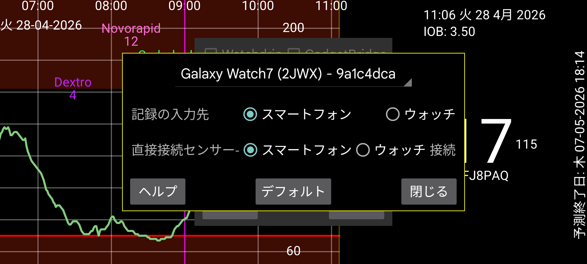

ar be de es fr hi it ja ko nl pl pt ru tr uk uz zh en
ウォッチで数値(記録)を入力: インスリン、炭水化物、運動の記録をスマートフォンではなくウォッチで入力します(2 番目のメニュー → 「記録」)。スマートフォンで Novopen をスキャンしたい場合は、これを設定すべきではありません。スマートフォンを忘れた場合、ウォッチでも左メニュー → センサー → 切り替えで同じことができます。
センサーとウォッチの直接接続: ウォッチがセンサーと直接接続されるかどうかを決定します。これはウォッチとスマートフォンが同期しているときのみ変更できます。スマートフォンとウォッチを同期するには、スマートフォンとウォッチで ミラー → 同期と再初期化 を使用します。「センサーとウォッチの直接接続」をオンにし忘れて、ウォッチだけを着けて家を飛び出してしまった場合は、ウォッチで左メニュー → センサー → 切り替えを押してセンサーをウォッチに直接接続できます。スマートフォンとウォッチが再び Bluetooth の届く範囲に入ると、センサーへの接続を停止しミラー接続の方向を反転するメッセージがスマートフォンに送信されます。
ウォッチアプリを初期化: このボタンを押す必要はもうありません。自動的に行われます。
デフォルト: 接続設定をデフォルト値に設定します。これは、ウォッチで 左メニュー → ミラーと、スマートフォンで 左中メニュー → ミラー で変更できる設定に関するものです。「能動のみ」や「スキャン」のような設定で構成されています。シャワーの水や睡眠中に偶然設定が変わった場合、このボタンを押せます。ウォッチ版を再インストールしたりデータをクリアしたりしてリセットした場合は、スマートフォン上のミラー接続も削除する必要があります。
Wear OS ウォッチで直接実行できる Juggluco の特別なバージョンがあります。センサーをスキャンするために NFC 付きの Android スマートフォンが必要で、TCP 接続経由でこのデータが Wear OS ウォッチに送信されます。その後 2 つの可能性があります:
センサーがスマートフォンに接続されたままで、スマートフォンが Bluetooth 経由で受信した各血糖値を TCP で Wear OS ウォッチに送信する;
センサーを Wear OS ウォッチに直接接続することもできます。これには Bluetooth 接続の良好な Wear OS ウォッチが必要です。
いくつかの画像は https://www.juggluco.nl/JugglucoWearOS にあります。
動作させるには次のようにします:
ウォッチとスマートフォンの両方で Bluetooth と WIFI が動作することを確認する;
ウォッチに十分な空き容量と RAM があることを確認する。重要な瞬間に容量が足りなくなると、Juggluco を再インストールする必要があるかもしれません;
「Bluetooth 経由のセンサー」を設定して、スマートフォン版の Juggluco をセンサーで動作させます。センサーを数回スキャンする必要があります;
Wear OS 版の Juggluco を Wear OS ウォッチにインストールして起動する;
スマートフォンで 左メニュー → ウォッチ → Wear OS 設定 へ進みます。スピナーにウォッチが表示されているはずです。「ウォッチアプリを初期化」を押す;
うまくいけば、両方の Juggluco で TCP 接続が設定され、スマートフォンのすべてのデータがウォッチに送信されます。Juggluco を長期間使っていた場合、送信するデータが多いため時間がかかります。TCP 接続が設定されているかは、ミラーダイアログ(スマートフォン: 左中メニュー → ミラー、ウォッチ: 左メニュー → ミラー)で確認できます。ウォッチのスピナーに表示されているのと同じ ID を持つ接続が表示されているはずです。ウォッチ側にはスマートフォンの IP も含まれているはずです。表示されないか、ウォッチ側に IP が含まれていない場合は、再度「ウォッチアプリを初期化」を押します。それでも表示されない場合は、Bluetooth 接続とウォッチへの接続を担当するスマートフォンアプリを確認してください。(ウォッチに既にデータが受信されている場合、「ウォッチアプリを初期化」を押すとすべてのデータが再送信されるため、ウォッチ版の Juggluco を再インストールするのと同じです。後で正しい IP が表示されない場合は、スマートフォン上で外部接続(WIFI またはモバイルデータ)をオフ/オンにする必要があります。
うまくいけば、スマートフォン版の Juggluco に表示されているのと同じデータが、ウォッチ版の Juggluco に表示されます。スマートフォンが受信した新しい血糖値はすべて TCP 経由でウォッチに送信されます。単位、血糖アラームレベル、リマインダーなどの一部の設定もウォッチに送信されます。後の変更はウォッチ自身で行う必要があります。
Bluetooth 接続の良好なスマートウォッチを持っていて、スマートフォンを持ち歩かずにウォッチで血糖値を受信したい場合、ウォッチ版の Juggluco をセンサーに直接接続できます。すべての値がウォッチに送信された後、「センサーとウォッチの直接接続」をチェックできます。これにより、スマートフォンでは「Bluetooth を使用」がオフになり、ウォッチではオンになります。ストリーム値はウォッチからスマートフォンに送信されるようになり、ミラーダイアログで確認できます。ウォッチとスマートフォンが同期していないとき「センサーとウォッチの直接接続」を変更することはできません。
センサーがウォッチと直接 Bluetooth で接続されており、その値がスマートフォンに送信される場合、スキャンされた値もスマートフォンからウォッチに送信される必要があり、ストリーム値は Juggluco でセンサーをスキャンする前に同期されている必要があります(設定はこのように自動的に構成されます)。そうしないと、古い値がウォッチに送信されたり、変更された認証情報がウォッチに送信されなかったりして、ロック解除キーのエラーが発生します。
接続の変更も、データが同期されているときのみ行うべきです。スマートフォンとウォッチのデータは完全な複製である必要があります(すべての記録データを除外できる例外を除く)。
初回はスマートフォンからウォッチに大量のデータを転送する必要があるので、ウォッチを充電器に接続できます。私のウォッチは充電器に接続すると WIFI をオンにします。
ウォッチ-スマートフォン接続は、Juggluco を実行しているスマートフォンと Juggluco サーバーを実行しているコンピューターの間で設定できるミラー接続を改造したものです。スマートフォンとウォッチの接続が上記の方法で自動生成された場合、次の追加機能があります:
接続の相手側の IP は自動的に決定されます。通常はミラー接続を直接いじる必要はなく、左メニュー → ウォッチ → WearOS 設定 で設定を変更できます。例外は、ウォッチで数値を入力したい場合です。その場合、ウォッチで入力に記載されているようにミラー設定を手動で変更する必要があります。
スマートフォンとウォッチ間の WIFI 接続が動作しない場合、Juggluco は Bluetooth 経由の TCP の使用に切り替えます。ウォッチに大量のデータを送信する初回使用時を除いて、ウォッチで WIFI をオフにできます。
スマートフォンとウォッチの Juggluco 間でデータが交換されない場合、次を確認できます:
ウォッチとスマートフォンで Bluetooth がオンになっている必要があります(WIFI はオフでも構いません);
ウォッチのコンパニオンアプリは、ウォッチがスマートフォンに接続されていることを表示する必要があります;
ウォッチの 左メニュー → ミラーとスマートフォンの 左中メニュー → ミラー には、ウォッチの識別子(スマートフォンの 左メニュー → ウォッチ → 「WearOS 設定」 に表示されているのと同じ識別子)を持つ自動作成された接続エントリがあるはずです;
ウォッチの 左メニュー → ミラー で再初期化と/または同期を押すと役立ちます;
同じことをスマートフォンで行う必要がある場合があります。その後ウォッチで再度行う必要がある場合があります;
スマートフォンやウォッチで Bluetooth をオフ/オンにすると役立ちます。その後、ウォッチで再度再初期化と同期を押す必要があります;
WIFI やモバイルデータで同じことを行う必要がある場合もあります;
Bluetooth を再び動作させるには、スマートフォンと/またはウォッチを再起動する必要があることがあります;
なんらかの理由でミラー接続の設定が誤った値に変更されることがあります。スマートフォンの 左メニュー → ウォッチ → 「WearOS 設定」 → デフォルト を押すと、元の値にリセットできます。これはまた、センサーをウォッチではなくスマートフォンに接続する効果もあります。ウォッチにのみ存在するデータは上書きされます;
他のすべてが失敗した場合は、ウォッチ版を再インストールしてやり直せます。その場合、左中メニュー → ミラー で既存のウォッチ接続を削除する必要があります。
なんらかの理由でデータがスマートフォンにはなくウォッチにある場合、はるかに困難です。なんとかしてまずスマートフォンでデータを受信するための機能するミラー接続を作成する必要があります。
Wear OS 版の Juggluco には、現在の血糖値と時刻、最大 4 つのコンプリケーションを表示するウォッチフェイスが含まれています。これを使用するには、例えばウォッチコンパニオンアプリの「ダウンロード済み」でこのウォッチフェイスを選択する必要があります。通常、画面が起きると最後の血糖値が表示されます。画面が常時表示モードのとき、血糖値は分インジケーターが上がるとき、またはボタンを押したり腕を上げたりしたときのみ更新されます。そのため表示される値は最大 1 分遅れることがあります。一部の新しいウォッチ(例えば Samsung Galaxy Watch 7 と Watch Ultra)では、バッテリー寿命を保つためプログラムされたウォッチフェイスを許可しないため、ウォッチフェイスは使用できません。
Juggluco 8.2.0 以降には、WearOS 5 でも使用できる血糖値、血糖矢印、矢印+値のコンプリケーションが含まれています。これは、小または大の画像コンプリケーションスロットを受け入れるすべてのウォッチフェイスで使用できます。例えば Time and Track や Watchface for Juggluco。Watch Face Studio で独自のウォッチフェイスを作ることもできます。
3 つ目のオプションは、ウォッチで Juggluco の設定で フローティング血糖をオンにすることです。Juggluco に適切な権限がある場合、血糖値が他のアプリの上に表示されます。これにより、任意のウォッチフェイスや活動を監視するアプリを使用しながら現在の血糖値を確認できます。詳細については、スマートフォン版の Juggluco で 左メニュー → 設定 → フローティング血糖 → ヘルプを参照してください。
コンパニオンアプリから、左中メニュー → ミラーに記載されているように、インターネット経由で他の端末に再度送信できます。ウォッチをインターネット上のサーバーに直接接続し、そこからフォロワースマートフォンに接続することも可能です: https://www.juggluco.nl/Juggluco/cmdline/watch